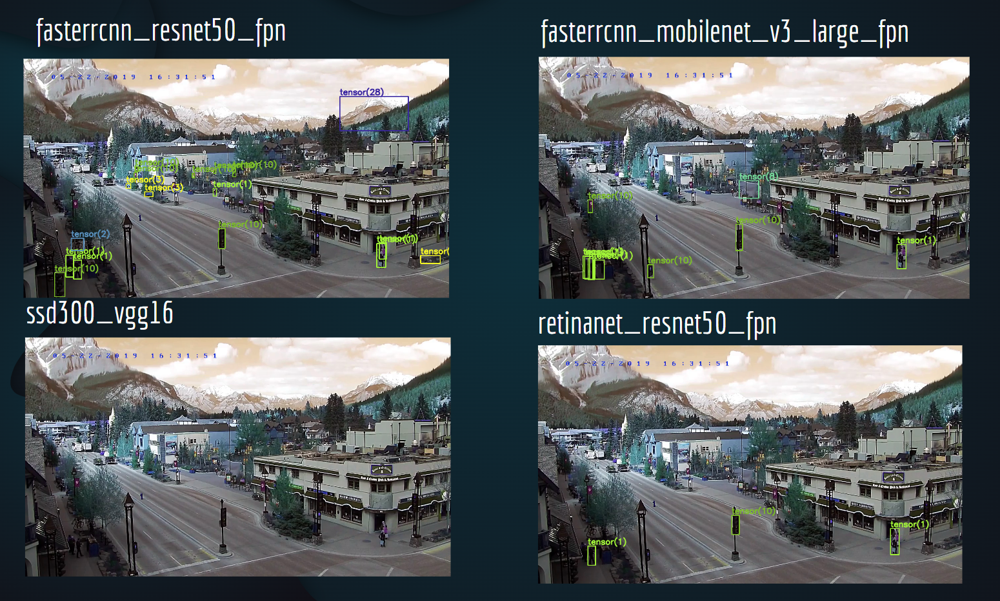
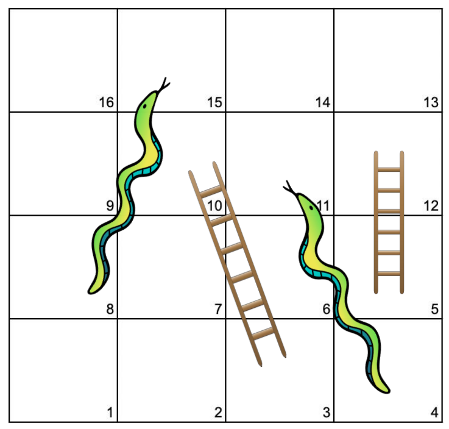
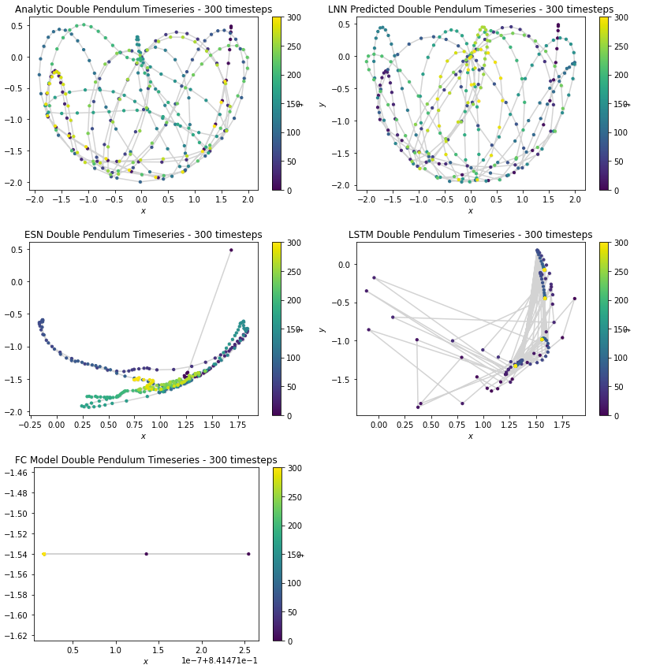
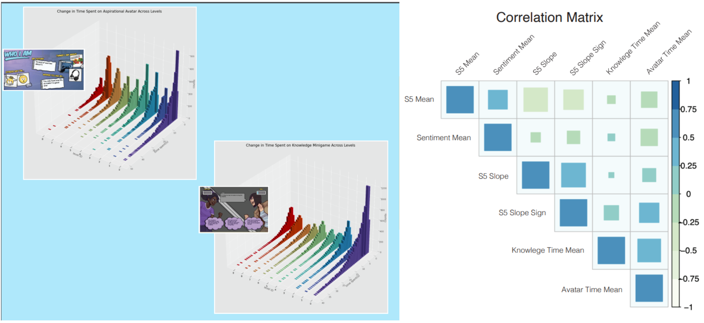
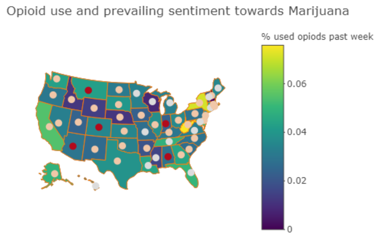
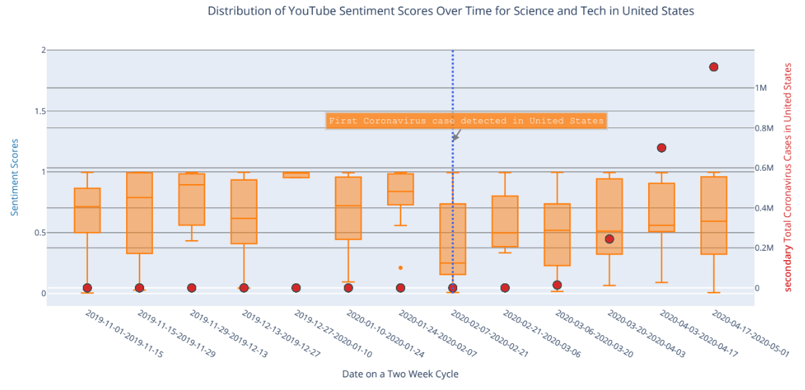

We explored the problem of allowing users to find an optimal pretrained model to use for a given task given specified resource limits. The model resources of interest to our project include computational time (latency), accuracy, and memory usage.
In the world of machine learning today, for many people, the question is no longer “can we make a neural network to perform a given task”, but “how can we make a neural network that performs a given task with the least possible resources.” While scientists have made plenty of advances in data and model compression, nowadays, there are so many models to choose from that it’s hard to tell which one would be ideal for any given job. Given the the rate of advancement of computer hardware, it is convenient to select a wastefully large model. However, with the equally if not more rapid increase in amount of data, being aware of computational resources such as time, memory, and latency have become extremely relevant again. In this project, we present a method for making intelligent resource-based model selection.
We are interested in examining games of chance and determining players' winning probabilities in different states of each game. We explore this through the lens of Snakes and Ladders (also known as Chutes and Ladders), first in a single-player setting and then in a multi-player setting. We create a sample board with 16 squares, and analyze its behavior mathematically and through simulation.
Our findings show that game duration is highly variable on a small board, and decreases sharply as the number of players increase. Further, in a two-player game, the player first to act has approximately a 3% edge keeps a slight (but decreasing) edge as we increase the handicap of the second player, until we start the second player on square 7. At this point, the second player is more likely to win. In multi-player settings, the player first to act retains approximately 4% above average win up to 5-players.
Code for producing random Snakes and Ladder game boards, multi-player simulation, and calculation of transitions and long run probabilities and matrices for any Snakes and Ladders game board are provided in the paper’s code repository.

This project was completed under the Pomona-AI club. We looked at StatsBomb's 360 data from the UEFA Women's Euro 2022 tournament, which contain detailed and holistic information on all "events" in all 31 soccer matches. An example is the position of completed pass on the field and where other players are relative of it.
We built models to predict outcome of the matches as the tournament unfolded as well as analyzed each team's strengths, weaknesses, and tendencies and key battlegrounds of each match. We built a framework that can be reproduced for future tournaments with Statsbomb's 360 data to predict outcomes and other statistics of upcoming matches.
[GitHub]
We consider the problem of using neural networks to predict the behavior of chaotic systems in physics. The goal
of this project is to verify that Lagrangian neural networks (LNNs) outperforms general-purpose neural nextworks
such as Reservois computing, long-short term memory neural networks, and fully-connected neural networks, which
are excellent at forecasting sequential tasks.
We found that the LNN is clearly the best model as it preserves total energy of the system, resulting in
realistic path predictions. Echo State networks and long-short term memory networks predictions appear random
with extreme discontinuity between time steps with respect to the laws of physics. The baseline fully-connected
model did not capture any information on system dynamics and predicted one position for all time steps to
minimize error.
[Project Website] [Project GitHub]

Inspired by the paper Genes Mirror Geography Within
Europe, we compare and contrast countries in similar situations during the pandemic. We used
unsupervised learning to look for hidden relationship between countries and the covid pandemic. Whether it be
commanality in health policies like masks or vaccine mandaates, or just similar weather, comparing countries
could provide insight in combating the virus.
We performed principal component analysis (PCA) on the Our World in Data COVID-19
dataset and k-means clustering on over 700 days. An interesting finding from our analysis is that
countries in the same region tend to be clustered together despite removing variables that may contain regional
information.
[GitHub] [Report]
We investigated biases in grading of student works by Professors and student graders (teaching assistants) and
proposed a series of research and study supported steps and methods that could help reduce biased grading.
[Proposal
Document]



We investigated player engagement in a dataset containing over two million data points of unpublished data on
Elm City Stories, a game designed by Yale Med School's Play2Prevent Lab to engage young students on sexual
health and drug prevention.
We concluded that the outcome variable (“S5 scores” from surveys conducted to evaluate effectiveness of game in
preventing feelings towards drug use) is highly flawed and were not collected consistently enough to inform us
of the true effectiveness of the game. This conclusion is supported by a paper later published on the game’s
data which had much more comprehensive and fine-grained metrics through more detailed surveys to evaluate the
effcetiveness of the game as well.
However, we did see some promising trends that the game boost confidence in making correct decisions in real
life situations involving drugs for players with high engagement.
[Project Folder]
[GitHub]
We investigated drug use in the U.S. in 2018. The goal of our project was to build a predictive logistic model
for non-medical usage of opioids within the United States. Demographic variables such as gender and age, as well
as DAST response questions, were found to be highly relevant for our potential models.
Geographical differences in drug use were preliminarily explored through spatial mapping. We also attempted to
incorporate economic information into our models, in particular, state unemployment rates, as we hypothesized
that higher unemployment rates signified more despondent environments and higher drug use.
Honing in on geographical and environmental differences within the US, we decided to use emotional valence data
from Twitter to get a more precise gauge of drug attitudes across different US states. The model classified each
Tweet into five emotional valence categories – “happy”, “sad”, “angry”, “fearful”, and “neutral”, and we
utilized the prevailing emotional valence within each state as another feature in our model.
[Project Folder]
[GitHub]
Awarded: UCLA DataFest Judges’ Award for Best Data Collection
We investigated the effect of the COVID-19 pandemic on Sentiment Scores of Popular YouTube Videos. We used data
from the John Hopkins COVID dataset in mid March 2020 and used YouTube API to access transcripts of popular
youtube videos in order to perform sentiment analysis on them.
We found that in a select few categories, the proportion of popular videos with positive senitment were
different before and after the Covid outbreak. However, in most categories across all countries, the sentiment
scores of popular videos remained the same. We speculate that this lack of difference may be due to the relative
job security of popular YouTubers, as well as the generally manufactured personality that is imprinted upon
large and more ‘methodical’ YouTube channels. Despite conditions worsening, perhaps large YouTube personalities
must maintain their ‘personalities’ to preserve their view count and income.
[Project Folder]
[GitHub]